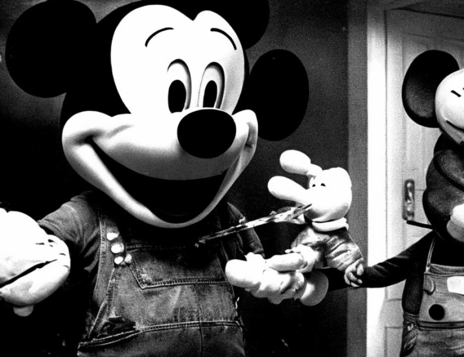

12 they essentially did was show different responses in terms of
13 how strong a stain was. And the stain on the submitted white
14 piece of gauze again was consistent with and could originate
15 from hot sauce stain such as the Keefe's Louisiana Hot Sauce
16 brand.
17 Q. You mentioned you found two chemicals on the swab that was
18 submitted?
19 A. Two chemicals were identified on the swab, capsaicin and
20 dehydrocapsaicin.
21 Q. You didn't identify acidic acid; is that right?
22 A. Acidic acid was not identified on the stain, and the
23 reason it was not identified is that, as I stated, these
24 stains are dry. Acidic acid is a liquid that when a substance
25 goes dry, it's not going to be around anymore than water for
7984
1 that. You don't perform a test for water on a dry specimen.
2 You don't perform a test for acidic acid on a dry specimen.
3 MR. GARCIA: I'm going to move into a final area that
4 would require a little setting up, if this is a convenient
5 time to break.
6 THE COURT: Okay. We will take our mid afternoon
7 recess at this point.
8 MR. GARCIA: Thank you, Judge.
9 MR. RUHNKE: During the break, if it's convenient
10 with your Honor, can we see you on an ex parte witness matter.
11 THE COURT: Yes.
12 (Pages 7985 through 7987 filed under seal)
13 (Continued on next page)
14
15
16
17
18
19
20
21
22
23
24
25
7988
1 (In open court)
2 THE COURT: Can I see a honey bear jar?
3 MR. GARCIA: This is 4044.
4 THE COURT: Do we have an exhibit as a Keffe's
5 Louisiana Hot Sauce?
6 MR. GARCIA: Yes.
7 THE COURT: Can I see that also?
1